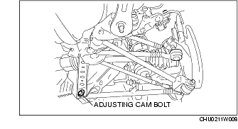
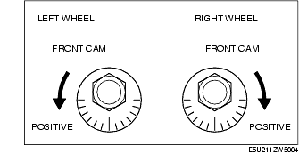
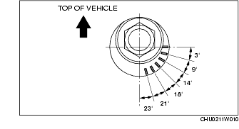
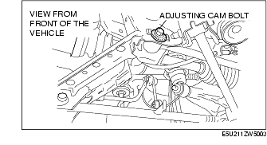
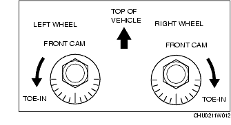
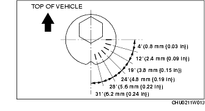

Workshop Manual ➭ SUSPENSION ➭ WHEEL ALIGNMENT ➭ REAR WHEEL ALIGNMENT
REAR WHEEL ALIGNMENT
id021100800300
{: #wp1059776}
**Rear wheel alignment [16-inch wheel]
+--------------------------------------------------------------------------------------------------------------------------------------------------------------------------------------------------+--------------------------------------+ | Item {: #wp1059898} | Specification {: #wp1059904} | +=======================================================+=====================================================================================================+====================================+======================================+ | Total toe-in {: #wp1059792} | Tire [Tolerance ±4 mm {0.15 in}] {: #wp1059794} | (mm {in}) {: #wp1059850} | 3 {0.12} {: #wp1059853} | +-------------------------------------------------------+-----------------------------------------------------------------------------------------------------+------------------------------------+--------------------------------------+ | | Rim inner {: #wp1059930} | (mm {in}) {: #wp1059933} | 1.8±2.4 {0.071±0.094} {: #wp1059936} | +-------------------------------------------------------+-----------------------------------------------------------------------------------------------------+------------------------------------+--------------------------------------+ | | | +-------------------------------------------------------+-----------------------------------------------------------------------------------------------------+------------------------------------+--------------------------------------+ | Camber {: #wp1059953} [Tolerance ±1°] {: #wp1060111} | Vehicle height: From the end of the rear fender to the center of the wheel (mm {in}) {: #wp1059956} | 354-363 {14.0-14.2} {: #wp1059959} | -1°33' {: #wp1059962} | +-------------------------------------------------------+-----------------------------------------------------------------------------------------------------+------------------------------------+--------------------------------------+ | | | 364-373 {14.4-14.6} {: #wp1059972} | -1°18' {: #wp1059975} | +-------------------------------------------------------+-----------------------------------------------------------------------------------------------------+------------------------------------+--------------------------------------+ | | | 374-383 {14.8-15.0} {: #wp1060097} | -1°04' {: #wp1060100} | +-------------------------------------------------------+-----------------------------------------------------------------------------------------------------+------------------------------------+--------------------------------------+ | | | 384-393 {15.2-15.4} {: #wp1060084} | -0°54' {: #wp1060087} | +-------------------------------------------------------+-----------------------------------------------------------------------------------------------------+------------------------------------+--------------------------------------+ | | | 394-403 {15.6-15.8} {: #wp1060071} | -0°45' {: #wp1060074} | +-------------------------------------------------------+-----------------------------------------------------------------------------------------------------+------------------------------------+--------------------------------------+} | degree {: #wp1059946} | 0°17'±22' {: #wp1059949{: #wp1064968}Rear wheel alignment [17-inch wheel]
+--------------------------------------------------------------------------------------------------------------------------------------------------------------------------------------------------+--------------------------------------+ | Item {: #wp1060348} | Specification {: #wp1060354} | +=======================================================+=====================================================================================================+====================================+======================================+ | Total toe-in {: #wp1060242} | Tire [Tolerance ±4 mm {0.15 in}] {: #wp1060244} | (mm {in}) {: #wp1060300} | 3 {0.12} {: #wp1060303} | +-------------------------------------------------------+-----------------------------------------------------------------------------------------------------+------------------------------------+--------------------------------------+ | | Rim inner {: #wp1060380} | (mm {in}) {: #wp1060383} | 2.2±2.8 {0.083±0.110} {: #wp1060386} | +-------------------------------------------------------+-----------------------------------------------------------------------------------------------------+------------------------------------+--------------------------------------+ | | | +-------------------------------------------------------+-----------------------------------------------------------------------------------------------------+------------------------------------+--------------------------------------+ | Camber {: #wp1060403} [Tolerance ±1°] {: #wp1060561} | Vehicle height: From the end of the rear fender to the center of the wheel (mm {in}) {: #wp1060406} | 349-358 {13.8-14.0} {: #wp1060409} | -1°42' {: #wp1060412} | +-------------------------------------------------------+-----------------------------------------------------------------------------------------------------+------------------------------------+--------------------------------------+ | | | 359-368 {14.2-14.4} {: #wp1060422} | -1°25' {: #wp1060425} | +-------------------------------------------------------+-----------------------------------------------------------------------------------------------------+------------------------------------+--------------------------------------+ | | | 369-378 {14.6-14.8} {: #wp1060547} | -1°11' {: #wp1060550} | +-------------------------------------------------------+-----------------------------------------------------------------------------------------------------+------------------------------------+--------------------------------------+ | | | 379-388 {15.0-15.2} {: #wp1060534} | -0°59' {: #wp1060537} | +-------------------------------------------------------+-----------------------------------------------------------------------------------------------------+------------------------------------+--------------------------------------+ | | | 389-398 {15.4-15.6} {: #wp1060521} | -0°49' {: #wp1060524} | +-------------------------------------------------------+-----------------------------------------------------------------------------------------------------+------------------------------------+--------------------------------------+**{: #wp1060226}} | degree {: #wp1060396} | 0°17'±22' {: #wp1060399
*Note*{: #wp1060676}
• Unloaded vehicle: Fuel tank is full. Engine coolant and engine oil are at specified level. Jack and tools are in designated position. {: #wp1064482}• Difference between the left and right camber angle is within 1°.
Camber Adjustment
- Loosen the fixing nut of the adjusting cam bolt (rear lateral link (lower)).{: #wp1060724}

- Rotate the adjusting cam bolt in either direction to adjust the camber.{: #wp1060755}

**Vehicle equipped with 16-inch wheel
+-------------------------------------+---------------------------+ | Vehicle height* {: #wp1060853} | Camber {: #wp1060855} | +=====================================+===========================+ | 354-363 {14.0-14.2} {: #wp1060795} | -1°33' {: #wp1060797} | +-------------------------------------+---------------------------+ | 364-373 {14.4-14.6} {: #wp1060870} | -1°18' {: #wp1060873} | +-------------------------------------+---------------------------+ | 374-383 {14.8-15.0} {: #wp1060877} | -1°04' {: #wp1060880} | +-------------------------------------+---------------------------+ | 384-393 {15.2-15.4} {: #wp1060957} | -0°54' {: #wp1060960} | +-------------------------------------+---------------------------+ | 394-403 {15.6-15.8} {: #wp1060983} | -0°45' {: #wp1060986} | +-------------------------------------+---------------------------+{: #wp1060782}Vehicle equipped with 17-inch wheel
+-------------------------------------+---------------------------+ | Vehicle height* {: #wp1061079} | Camber {: #wp1061081} | +=====================================+===========================+ | 349-358 {13.8-14.0} {: #wp1061021} | -1°42' {: #wp1061023} | +-------------------------------------+---------------------------+ | 359-368 {14.2-14.4} {: #wp1061096} | -1°25' {: #wp1061099} | +-------------------------------------+---------------------------+ | 369-378 {14.6-14.8} {: #wp1061103} | -1°11' {: #wp1061106} | +-------------------------------------+---------------------------+ | 379-388 {15.0-15.2} {: #wp1061183} | -0°59' {: #wp1061186} | +-------------------------------------+---------------------------+ | 389-398 {15.4-15.6} {: #wp1061209} | -0°49' {: #wp1061212} | +-------------------------------------+---------------------------+**{: #wp1061012}
*: From the end of the rear fender to the center of the wheel (mm {in})
|
Right wheel {: #wp1061344} |
||
|---|---|---|
|
Positive direction {: #wp1061258} |
Counterclockwise {: #wp1061260} |
Clockwise {: #wp1061316} |
|
Negative direction {: #wp1061363} |
Clockwise {: #wp1061366} |
Counterclockwise {: #wp1061369} |
*Note*{: #wp1061439}
• Refer to the figure for the adjusting angle per one graduation.

- Tighten the nut.
Tightening torque117.7-137.3 N·m {12.1-14.0 kgf·m, 86.9-101.2 ft·lbf}
Total Toe-in Adjustment
- Loosen the installation nut of the adjusting cam bolt.{: #wp1061538}

- Rotate the adjusting cam bolt in either direction to adjust the toe-in.{: #wp1061565}

Standard3±4 mm {0.08±0.15 in} (0°17'±20')
*Note*{: #wp1061629}
• Refer to the following figure for the adjusting angle per one graduation of the toe-in gauge.

- Tighten the nut.
Tightening torque70-95 N·m {7.2-9.6 kgf·m, 52-70 ft·lbf}